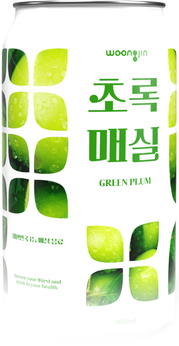

이름만 들어도 매실의 싱그러움이 가득 느껴지는 웅진 초록매실입니다.
매실의 새콤달콤한 풍미를 담아 언제 마셔도 기분이 좋아요.
식사 후 입가심이 필요할 때, 지루한 일상에 상큼함이 필요할 때 초록매실을 마셔 보세요.
남녀노소 누구나 맛있게 즐길 수 있으니 온 가족 음료로도 제격이랍니다.
매실의 새콤달콤한 풍미를 담아 언제 마셔도 기분이 좋아요.
식사 후 입가심이 필요할 때, 지루한 일상에 상큼함이 필요할 때 초록매실을 마셔 보세요.
남녀노소 누구나 맛있게 즐길 수 있으니 온 가족 음료로도 제격이랍니다.